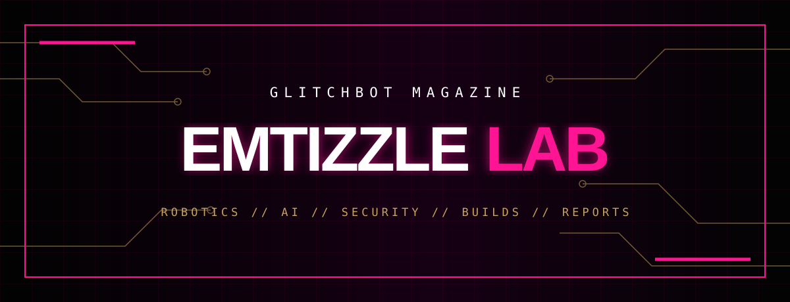

GLITCHBOT // EXPERIMENTAL DIVISION // 001

WELCOME TO
THE LAB.
Welcome to our workshop. We build robots, develop AI agents, engineer security tools, and turn wild ideas into working prototypes. Explore the experiments, breakthroughs, failures, and beautifully chaotic build logs behind the machines.
⚡ EMTIZZLE LAB // AUDIO SYSTEMS ONLINE
▶ INITIALIZE SOUNDTRACK
The Prodigy × Pendulum — Voodoo People (Pendulum Mix). Press play to activate the lab soundtrack.
Playback is controlled by Spotify and may require a Spotify account.
ROBOT DIARIES
The machines have stories.
02 // ◈AI AFTER DARK
Intelligence doesn't sleep.
03 // ⌘CODEBABE'S CORNER
Break things. Understand everything.
04 // ⚙BUILD LOGS
Beautifully unfinished.
05 // ⚡THE GLITCH REPORT
Signal over hype.